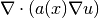
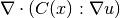
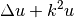
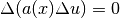
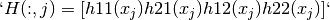

Module asm¶
- asm_generic(mim, order, expression, region, model=None, *args)¶
Synopsis: (...) = asm_generic(MeshIm mim, int order, string expression, int region, [Model model,] [string varname, int is_variable[, {MeshFem mf, MeshImd mimd}], value], ...)
High-level generic assembly procedure for volumic or boundary assembly.
Performs the generic assembly of expression with the integration method mim on the mesh region of index region (-1 means all the element of the mesh). The same mesh should be shared by the integration method and all the finite element methods or mesh_im_data corresponding to the variables.
order indicates either that the (scalar) potential (order = 0) or the (vector) residual (order = 1) or the tangent (matrix) (order = 2) is to be computed.
model is an optional parameter allowing to take into account all variables and data of a model.
The variables and constant (data) are listed after the region number (or optionally the model). For each variable/constant, first the variable/constant name should be given (as it is referred in the assembly string), then 1 if it is a variable or 0 for a constant, then the finite element method if it is a fem variable/constant or the mesh_im_data if it is data defined on integration points, and the vector representing the value of the variable/constant. It is possible to give an arbitrary number of variable/constant. The difference between a variable and a constant is that automatic differentiation is done with respect to variables only (see GetFEM++ user documentation). Test functions are only available for variables, not for constants.
Note that if several variables are given, the assembly of the tangent matrix/residual vector will be done considering the order in the call of the function (the degrees of freedom of the first variable, then of the second, and so on). If a model is provided, all degrees of freedom of the model will be counted first.
For example, the L2 norm of a vector field “u” can be computed with:
gf_compute('L2 norm') or with the square root of: gf_asm('generic', mim, 0, 'u.u', -1, 'u', 1, mf, U);The nonhomogeneous Laplacian stiffness matrix of a scalar field can be evaluated with:
gf_asm('laplacian', mim, mf, mf_data, A) or equivalently with: gf_asm('generic', mim, 2, 'A*Grad_Test2_u.Grad_Test_u', -1, 'u', 1, mf, U, 'A', 0, mf_data, A);
- asm_mass_matrix(mim, mf1, mf2=None, *args)¶
Synopsis: M = asm_mass_matrix(MeshIm mim, MeshFem mf1[, MeshFem mf2[, int region]])
Assembly of a mass matrix.
Return a SpMat object.
- asm_laplacian(mim, mf_u, mf_d, a, region=None)¶
Assembly of the matrix for the Laplacian problem.
 with a a scalar.
Return a SpMat object.
- asm_linear_elasticity(mim, mf_u, mf_d, lambda_d, mu_d, region=None)¶
Assembles of the matrix for the linear (isotropic) elasticity problem.
 with
 defined via lambda_d and mu_d.
defined via lambda_d and mu_d.Return a SpMat object.
- asm_nonlinear_elasticity(mim, mf_u, U, law, mf_d, params, *args)¶
Synopsis: TRHS = asm_nonlinear_elasticity(MeshIm mim, MeshFem mf_u, vec U, string law, MeshFem mf_d, mat params, {‘tangent matrix’|’rhs’|’incompressible tangent matrix’, MeshFem mf_p, vec P|’incompressible rhs’, MeshFem mf_p, vec P})
Assembles terms (tangent matrix and right hand side) for nonlinear elasticity.
The solution U is required at the current time-step. The law may be choosen among:
- ‘SaintVenant Kirchhoff’: Linearized law, should be avoided). This law has the two usual Lame coefficients as parameters, called lambda and mu.
- ‘Mooney Rivlin’: This law has three parameters, called C1, C2 and D1. Can be preceded with the words ‘compressible’ or ‘incompressible’ to force a specific version. By default, the incompressible version is considered which requires only the first two material coefficients.
- ‘neo Hookean’: A special case of the ‘Mooney Rivlin’ law that requires one material coefficient less (C2 = 0). By default, its compressible version is used.
- ‘Ciarlet Geymonat’: This law has 3 parameters, called lambda, mu and gamma, with gamma chosen such that gamma is in ]-lambda/2-mu, -mu[.
The parameters of the material law are described on the MeshFem mf_d. The matrix params should have nbdof(mf_d) columns, each row correspounds to a parameter.
The last argument selects what is to be built: either the tangent matrix, or the right hand side. If the incompressibility is considered, it should be followed by a MeshFem mf_p, for the pression.
Return a SpMat object (tangent matrix), vec object (right hand side), tuple of SpMat objects (incompressible tangent matrix), or tuple of vec objects (incompressible right hand side).
- asm_helmholtz(mim, mf_u, mf_d, k, region=None)¶
Assembly of the matrix for the Helmholtz problem.
 = 0, with k complex scalar.
Return a SpMat object.
- asm_bilaplacian(mim, mf_u, mf_d, a, region=None)¶
Assembly of the matrix for the Bilaplacian problem.
 with a scalar.
Return a SpMat object.
- asm_bilaplacian_KL(mim, mf_u, mf_d, a, nu, region=None)¶
Assembly of the matrix for the Bilaplacian problem with Kirchhoff-Love formulation.
with a scalar.
Return a SpMat object.
- asm_volumic_source(mim, mf_u, mf_d, fd, region=None)¶
Assembly of a volumic source term.
Output a vector V, assembled on the MeshFem mf_u, using the data vector fd defined on the data MeshFem mf_d. fd may be real or complex-valued.
Return a vec object.
- asm_boundary_source(bnum, mim, mf_u, mf_d, G)¶
Assembly of a boundary source term.
G should be a [Qdim x N] matrix, where N is the number of dof of mf_d, and Qdim is the dimension of the unkown u (that is set when creating the MeshFem).
Return a vec object.
- asm_dirichlet(bnum, mim, mf_u, mf_d, H, R, threshold=None)¶
Assembly of Dirichlet conditions of type h.u = r.
Handle h.u = r where h is a square matrix (of any rank) whose size is equal to the dimension of the unkown u. This matrix is stored in H, one column per dof in mf_d, each column containing the values of the matrix h stored in fortran order:

if u is a 2D vector field.
Of course, if the unknown is a scalar field, you just have to set H = ones(1, N), where N is the number of dof of mf_d.
This is basically the same than calling gf_asm(‘boundary qu term’) for H and calling gf_asm(‘neumann’) for R, except that this function tries to produce a ‘better’ (more diagonal) constraints matrix (when possible).
See also Spmat.Dirichlet_nullspace().
- asm_boundary_qu_term(boundary_num, mim, mf_u, mf_d, q)¶
Assembly of a boundary qu term.
q should be be a [Qdim x Qdim x N] array, where N is the number of dof of mf_d, and Qdim is the dimension of the unkown u (that is set when creating the MeshFem).
Return a SpMat object.
- asm_define_function(name, nb_args, expression, expression_derivative_t=None, *args)¶
Synopsis: asm_define_function(string name, int nb_args, string expression[, string expression_derivative_t[, string expression_derivative_u]])
Define a new function name which can be used in high level generic assembly. The function can have one or two parameters. In expression all available predefined function or operation of the generic assembly can be used. However, no reference to some variables or data can be specified. The argument of the function is t for a one parameter function and t and u for a two parameter function. For instance ‘sin(pi*t)+2*t*t’ is a valid expression for a one parameter function and ‘sin(max(t,u)*pi)’ is a valid expression for a two parameters function. expression_derivative_t and expression_derivative_u are optional expressions for the derivatives with respect to t and u. If they are not furnished, a symbolic derivation is used.
- asm_undefine_function(name)¶
Cancel the definition of a previously defined function name for the high level generic assembly.
- asm_define_linear_hardening_function(name, sigma_y0, H, *args)¶
Synopsis: asm_define_linear_hardening_function(string name, scalar sigma_y0, scalar H, ... [string ‘Frobenius’])
Define a new linear hardening function under the name name, with initial yield stress sigma_y0 and hardening modulus H. If an extra string argument with the value ‘Frobenius’ is provided, the hardening function is expressed in terms of Frobenius norms of its input strain and output stress, instead of their Von-Mises equivalents.
- asm_define_Ramberg_Osgood_hardening_function(name, sigma_ref, *args)¶
Synopsis: asm_define_Ramberg_Osgood_hardening_function(string name, scalar sigma_ref, {scalar eps_ref | scalar E, scalar alpha}, scalar n[, string ‘Frobenius’])
Define a new Ramberg Osgood hardening function under the name name, with initial yield stress sigma_y0 and hardening modulus H. If an extra string argument with the value ‘Frobenius’ is provided, the hardening function is expressed in terms of Frobenius norms of its input strain and output stress, instead of their Von-Mises equivalents.
- asm_expression_analysis(expression, *args)¶
Synopsis: asm_expression_analysis(string expression [, {@tm mesh | MeshIm mim}] [, der_order] [, Model model] [, string varname, int is_variable[, {MeshFem mf | MeshImd mimd}], ...])
Analyse a high-level generic assembly expression and print information about the provided expression.
- asm_volumic(CVLST=None, *args)¶
Synopsis: (...) = asm_volumic(,CVLST], expr [, mesh_ims, mesh_fems, data...])
Low-level generic assembly procedure for volumic assembly.
The expression expr is evaluated over the MeshFem’s listed in the arguments (with optional data) and assigned to the output arguments. For details about the syntax of assembly expressions, please refer to the getfem user manual (or look at the file getfem_assembling.h in the getfem++ sources).
For example, the L2 norm of a field can be computed with:
gf_compute('L2 norm') or with the square root of: gf_asm('volumic','u=data(#1); V()+=u(i).u(j).comp(Base(#1).Base(#1))(i,j)',mim,mf,U)The Laplacian stiffness matrix can be evaluated with:
gf_asm('laplacian',mim, mf, mf_data, A) or equivalently with: gf_asm('volumic','a=data(#2);M(#1,#1)+=sym(comp(Grad(#1).Grad(#1).Base(#2))(:,i,:,i,j).a(j))', mim,mf,mf_data,A);
- asm_boundary(bnum, expr, mim=None, mf=None, data=None, *args)¶
Synopsis: (...) = asm_boundary(int bnum, string expr [, MeshIm mim, MeshFem mf, data...])
Low-level generic boundary assembly.
See the help for gf_asm(‘volumic’).
- asm_interpolation_matrix(mf, *args)¶
Synopsis: Mi = asm_interpolation_matrix(MeshFem mf, {MeshFem mfi | vec pts})
Build the interpolation matrix from a MeshFem onto another MeshFem or a set of points.
Return a matrix Mi, such that V = Mi.U is equal to gf_compute(‘interpolate_on’,mfi). Useful for repeated interpolations. Note that this is just interpolation, no elementary integrations are involved here, and mfi has to be lagrangian. In the more general case, you would have to do a L2 projection via the mass matrix.
Mi is a SpMat object.
- asm_extrapolation_matrix(mf, *args)¶
Synopsis: Me = asm_extrapolation_matrix(MeshFem mf, {MeshFem mfe | vec pts})
Build the extrapolation matrix from a MeshFem onto another MeshFem or a set of points.
Return a matrix Me, such that V = Me.U is equal to gf_compute(‘extrapolate_on’,mfe). Useful for repeated extrapolations.
Me is a SpMat object.
- asm_integral_contact_Uzawa_projection(bnum, mim, mf_u, U, mf_lambda, vec_lambda, mf_obstacle, obstacle, r, *args)¶
Synopsis: B = asm_integral_contact_Uzawa_projection(int bnum, MeshIm mim, MeshFem mf_u, vec U, MeshFem mf_lambda, vec vec_lambda, MeshFem mf_obstacle, vec obstacle, scalar r [, {scalar coeff | MeshFem mf_coeff, vec coeff} [, int option[, scalar alpha, vec W]]])
- Specific assembly procedure for the use of an Uzawa algorithm to solve
- contact problems. Projects the term $-(lambda - r (u_N-g))_-$ on the finite element space of $lambda$.
Return a vec object.
- asm_level_set_normal_source_term(bnum, mim, mf_u, mf_lambda, vec_lambda, mf_levelset, levelset)¶
Performs an assembly of the source term represented by vec_lambda on mf_lambda considered to be a component in the direction of the gradient of a levelset function (normal to the levelset) of a vector field defined on mf_u on the boundary bnum.
Return a vec object.
- asm_lsneuman_matrix(mim, mf1, mf2, ls, region=None)¶
Assembly of a level set Neuman matrix.
Return a SpMat object.
- asm_nlsgrad_matrix(mim, mf1, mf2, ls, region=None)¶
Assembly of a nlsgrad matrix.
Return a SpMat object.
- asm_stabilization_patch_matrix(mesh, mf, mim, ratio, h)¶
Assembly of stabilization patch matrix .
Return a SpMat object.

前のトピックへ
次のトピックへ
Download
Main documentations
- GetFEM++ User documentation
- Python Interface
- Matlab Interface
- Scilab Interface
- Gmm++
- GetFEM++ project